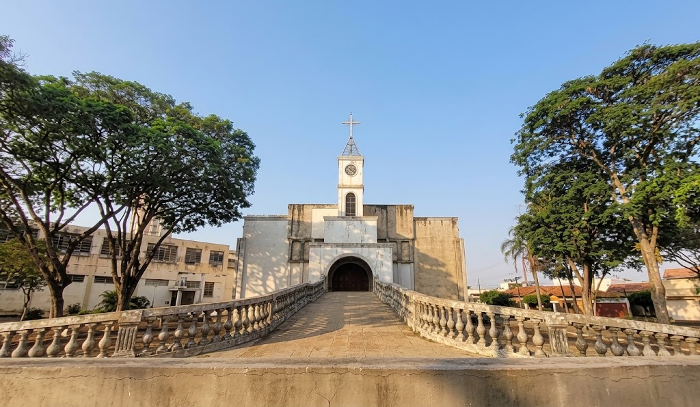

Linha do tempo
-
Década de 1960
Na vila já existia uma pequena igreja de madeira, ligada à paróquia da Vila Operária e atendida pelo Padre Aloísio e por outros padres do PIME (Pontifício Instituto das Missões Exteriores).
-
Início das obras
Com o aumento do número de fiéis, o Padre Adalton Pereira de Castro começou a construir a nova igreja, com a autorização de Dom Lázaro e muita ajuda da comunidade.
-
12 de novembro de 1973
A nova igreja foi inaugurada, no mesmo ano das Santas Missões, quando missionários visitaram Assis. Contam os relatos que, às 6 da manhã, um alto-falante tocava música para convidar os fiéis às primeiras pregações.
-
1976
Foi inaugurada a praça da igreja, com uma grande cruz erguida pela própria comunidade. Desde então, o espaço recebe festividades, quermesses e procissões.
-
2020
O Padre Heliton Luiz Ferreira passou a conduzir a paróquia. Durante o isolamento da pandemia de Covid-19, as missas foram transmitidas pela internet.
-
2026
O Padre Arnaldo José Gomes Teixeira assumiu como pároco e o Padre Thiago Antônio de Souza como vigário paroquial, conforme os novos ofícios anunciados pela Diocese de Assis.

O bairro e o nome
A igreja fica na Vila Santa Cecília, um dos bairros mais tradicionais de Assis. O nome do bairro é uma homenagem a Cecília Boquembuzzo Santilli, que, junto com o marido, Paschoal Santilli, doou as terras onde ele nasceu.
Foi nessa vila que funcionou também o Conservatório Musical Santa Cecília, o que combina com a história da santa, lembrada como padroeira dos músicos.
Nossa padroeira
Santa Cecília foi uma mártir cristã de Roma, nos primeiros séculos da Igreja. A tradição a recorda como padroeira dos músicos e da música sacra. Sua memória é celebrada todos os anos em 22 de novembro.
Uma paróquia com muitas comunidades
Além da igreja matriz, a paróquia cuida de capelas na cidade e na zona rural, levando a celebração e a vida em comunidade a diferentes regiões de Assis.
Capelas na cidade
São Pedro e São Paulo (Parque Universitário), São João Paulo II (Pacaembu), São Judas Tadeu e São João Batista.
Capelas na zona rural
Cristo Rei (Água do Pinheiro) e Sagrada Família (Cervinho).
Fé que se transforma em serviço
A Pastoral Social recolhe alimentos durante as missas para famílias em vulnerabilidade. Por meio das chamadas famílias-irmãs, a comunidade faz visitas, levanta as necessidades de cada casa e acompanha quem precisa, num trabalho que vai além da caridade e leva humanização. Na Campanha da Fraternidade, essas atividades se intensificam.
A PASCOM, Pastoral da Comunicação, mantém os fiéis informados pelas redes sociais da paróquia.
Fontes: página da paróquia no site da Diocese de Assis e reportagem “Paróquia Santa Cecília: uma linda parte da história de Assis”, do AssisCity (abril de 2023).